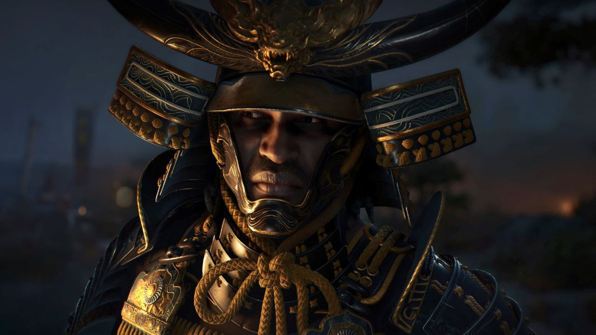
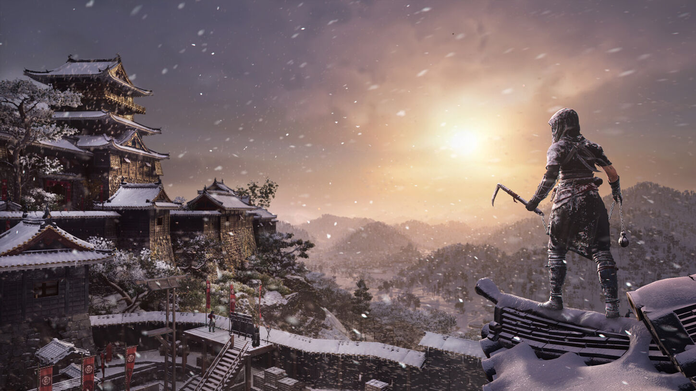
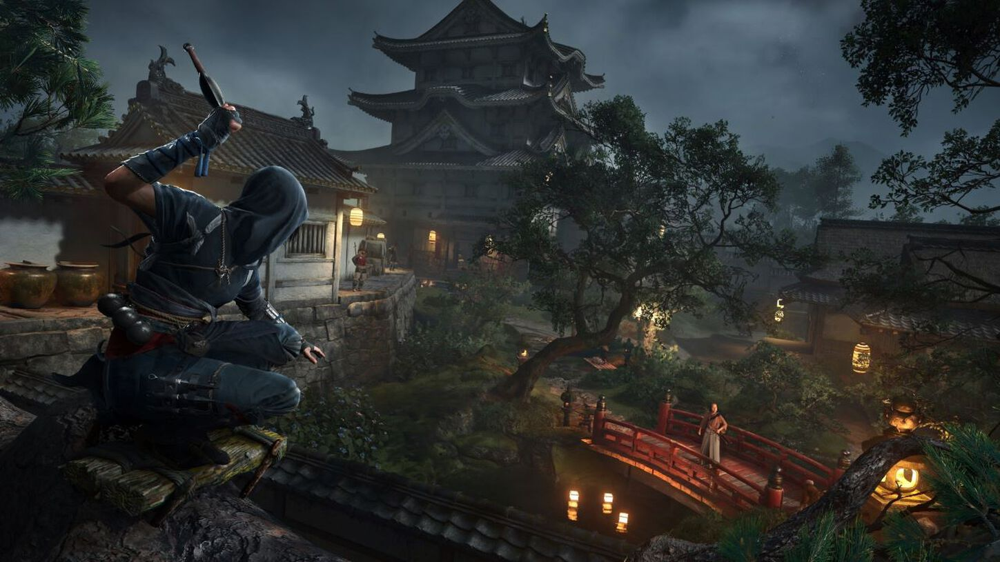
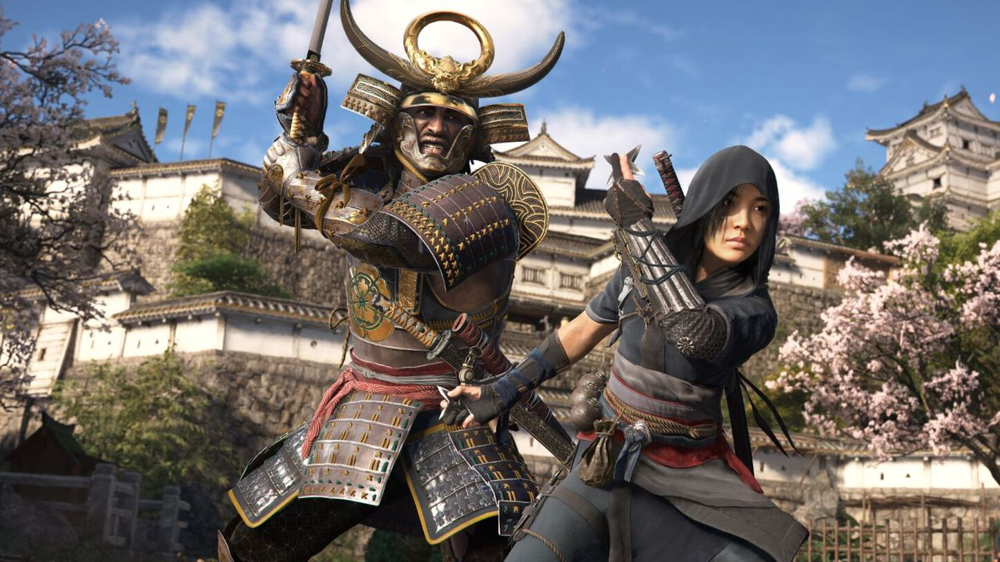
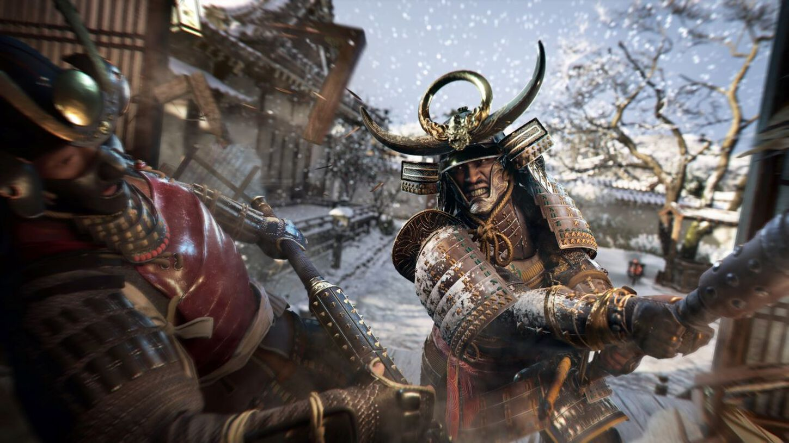

直
直Shinobi · Iga
Naoe
„Když mě nevidíš, jsem nejblíž.“
RychlostStealthKunai
Feudální Japonsko · 1579
Dvě cesty. Jeden osud. Objev příběh Naoe a Yasukeho v zemi, kde se ticho stává největší zbraní.

V srdci Japonska se schyluje k neklidné budoucnosti. Země je rozdělená válkou a každý krok může změnit její dějiny.
Ve hře Assassin’s Creed Shadows se setkávají dvě odlišné perspektivy: Naoe, talentovaná shinobi z provincie Iga, a Yasuke, africký samuraj zapsaný v japonské historii. Jejich rozdíly se stávají jejich největší silou.
Prozkoumat svět ↗Ve tmě se rodí ti, kteří mění svět.
”Každý hrdina nabízí jiný rytmus, jinou zbraň a jiný pohled na svět, který čeká na osvobození.
直Shinobi · Iga
„Když mě nevidíš, jsem nejblíž.“
 力
力Samuraj · Cizinec
„Čest není dar. Je to rozhodnutí.“
Od horských stezek v regionu Iga přes rušné ulice Ósaky až po historické centrum Kjóta. Assassin’s Creed Shadows zasazuje svůj příběh do skutečných oblastí středního Japonska.

Střední Japonsko · mapa příběhu

01 ⌖Horské údolí shinobi

02 ⌖Hrad, přístav a tržiště

03 ⌖Politické srdce země

04 ⌖Oda Nobunaga a jeho hrad
Klikni na lokaci a odhal její příběh.
01 / Domov shinobi
Horské údolí ukryté mezi lesy a skalami. Iga je místem, kde Naoe vyrůstala a kde se učí proměnit ticho, terén a stín ve vlastní výhodu.
Zpět k lokacím ↑02 / Město obchodu
Rušný přístav, tržiště a mohutný hrad vytvářejí prostor, kde se střetává moc, obchod i každodenní život. Ve městě se vyplatí sledovat dav stejně pozorně jako svého cíle.
Zpět k lokacím ↑03 / Politické srdce
Historické centrum země plné chrámů, zahrad a mocenských intrik. Kjóto odměňuje trpělivost a pečlivé plánování každého kroku.
Zpět k lokacím ↑04 / Pevnost Nobunagy
Výrazná pevnost a symbol rostoucí moci Ody Nobunagy. Azuči spojuje velkolepou architekturu s napětím, které je cítit za každou zdí.
Zpět k lokacím ↑